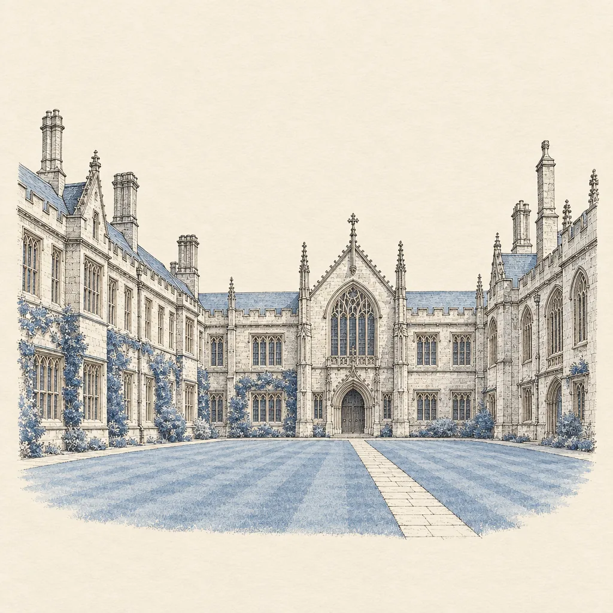

Every student
has a way through.
An Oxford-based consultancy for international families. We walk with each student through the thresholds of British education — school, university, and whatever lies beyond the last arch.
Follow the route →- 20+years of combined experience
- 240+offers received
- 180+families guided
Education is not a destination. It is a passage — a series of thresholds, each one opening quietly onto the next.
For international families choosing British education
One route, walked together.
Every family arrives at a different gate, and no one passes through all five in the same way. But the passage is never made alone.
School
The first threshold is the school that fits — not the most famous name, but the right house, the right pace, the right room to grow. We read the child before we read the league tables.
- 01Understanding the student — character, language, ambitions
- 02A shortlist of schools chosen for fit, not prestige alone
- 03Visits, introductions and applications, arranged end to end
Preparation
Before every threshold there is a corridor — the quiet work of getting ready. Entrance assessments, interviews, the English that exams don't measure: preparation is where confidence is built.
- 01Assessment preparation for UKiset, ISEB and school-specific papers
- 02Interview coaching — thinking aloud, not reciting answers
- 03Academic English and settling-in support on arrival
University
The route narrows to a single statement, five choices, one direction. We help students find the course worth committing to — then build an application that sounds like no one else.
- 01Course and university selection across the UCAS landscape
- 02Personal statement development — drafts, honesty, voice
- 03Admissions tests and predicted-grade strategy
Oxbridge
For some students, the passage leads here — to colleges, tutors and interviews unlike anything else in the world. We prepare them for the conversation, not the performance.
- 01College choice — the question inside the question
- 02Tutorial-style preparation with subject specialists
- 03Mock interviews that teach students to think on their feet
What’s next
Every arch opens onto something. Careers, postgraduate study, the first steps of a working life — the route continues, and so does the relationship. Our students come back for advice long after the last application.
- 01Postgraduate and career-direction counsel
- 02A standing relationship, not a finished transaction
The gates are numbered, but the order is yours.
Destinations, named.
The universities and schools where Albion students study today. The list grows as offers arrive — and is shown to families in full on request.
The list is in preparation — published names appear only with consent.
There is no standard route.
Two students can leave the same school and arrive at entirely different futures — and both be right. We do not sell a conveyor belt. We draw a map for one traveller at a time.
One person, not a cohort.

“The counsellor knew my daughter better after one afternoon than her school did after three years.”
Parent of an ALBION studenttestimonial to be supplied
What walking together means.
One advisor, whole route
A single counsellor who knows the family's whole story — not a relay of specialists handing the file onward.
Inside the colleges
Based in Oxford, working within the system families are trying to enter — tutors, schools, admissions offices are neighbours, not abstractions.
Honest counsel
We tell families what a child needs to hear, not what an invoice suggests. Sometimes that means a humbler school and a happier student.
The family included
Parents crossing borders need translation of more than language — expectations, culture, process. We carry the family through each gate together.
Beyond the letter
An offer is a door opening, not the journey's end. Guardianship, settling-in, and counsel that continues for years after arrival.
Counsellors, not consultants.
A small practice by design — every family is known by name. Full profiles and portraits will live here.
to be supplied
Name to be supplied
Founder · Senior Advisor
to be supplied
Name to be supplied
Advisor · Schools
to be supplied
Name to be supplied
Advisor · Universities
to be supplied
Name to be supplied
Advisor · Oxbridge
Every advisor at ALBION has stood on both sides of the gates — as applicant, and as guide.
Measured in years walked.
Years of combined experience guiding international families through British education
School & university placements · figure to be supplied
Families currently advised · figure to be supplied
ALBION publishes only what it can stand behind. Further figures — destinations, outcomes, testimonials — will appear here as they are verified.
Notes from the corridor.
Issue 00 — Forthcoming
Meet us at the gate.
Small gatherings in Oxford and abroad — conversations, not fairs. Dates and venues to be announced.
A parent's guide to British schools
PDF · freeStart with the parent's guide.
A calm walk through the British system — schools, exams, timelines — written by the counsellors who walk it. No jargon, no funnel inside.
- 01A parent's guide to British schoolsthis one
- 02Entrance exams 11+ / 13+ / 16+ in 90 days
- 03The admissions interview, decoded
One email with the PDF. No sequence, no pressure.